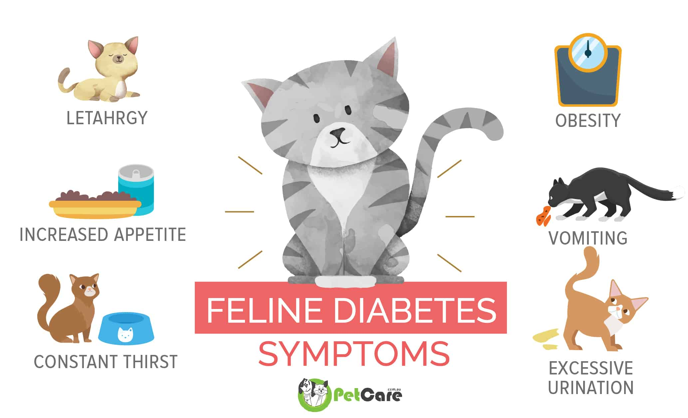

How many types of Diabetic cats are there? Is it dangerous?
Explore the world of feline diabetes and understand the different types of diabetic cats. Many cat owners may wonder about the dangers associated with diabetes in their feline companions.
Understanding Feline Diabetes
Feline diabetes is a condition that affects cats, impacting their ability to regulate blood sugar levels. There are primarily two types of diabetic cats, each with its characteristics and management requirements.
Types of Diabetic Cats
- Type 1 Diabetes: Insulin-dependent diabetes
- Type 2 Diabetes: Non-insulin-dependent diabetes
Understanding the type of diabetes your cat has is crucial for implementing the right treatment plan and ensuring their well-being.
The Importance of Early Detection
While diabetes in cats can be managed with proper veterinary care, early detection is key. Common signs of diabetes in cats include increased thirst, frequent urination, weight loss, and changes in appetite.
Consulting with a veterinarian and implementing a tailored treatment plan can help diabetic cats lead healthy and fulfilling lives.